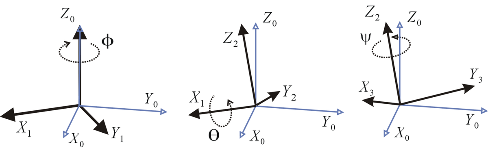
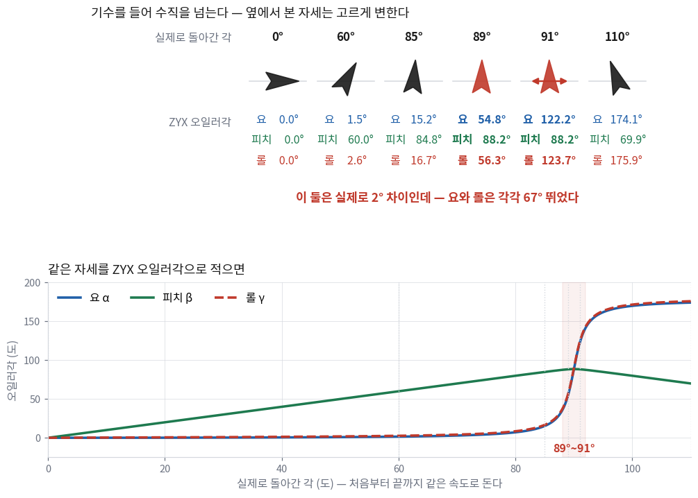
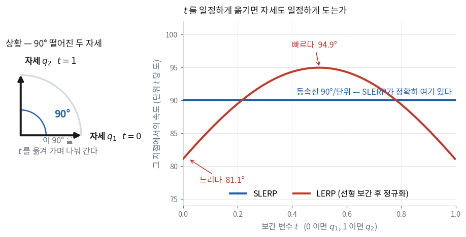
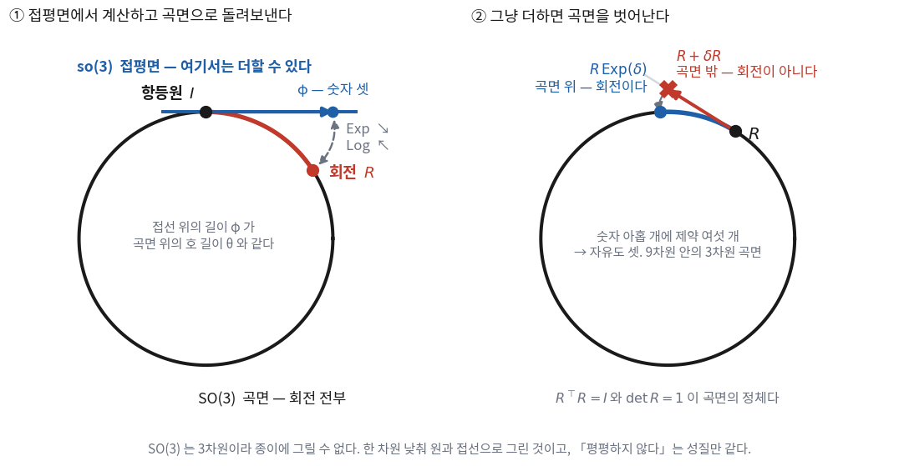
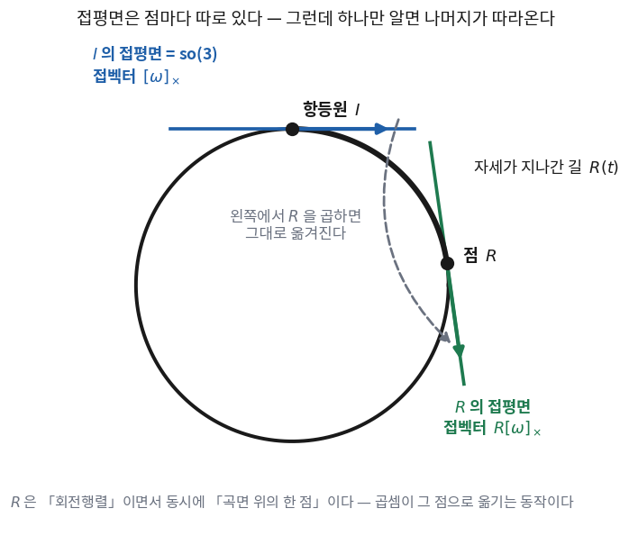

left perturbation과 right perturbation은 무엇이 다르고, 섞으면 무슨 일이 생기나?
내가 손으로 쓴 야코비안이 맞다는 걸 어떻게 확인하나?
지난 시간에는 \(R\)을 주어진 것으로 놓고 곱하기만 했다.
오늘부터는 \(R\)이 우리가 추정할 변수가 된다.
변수가 되는 순간 두 가지가 필요해진다 — 표현과 미분이다.
앞의 절반(①~⑥)은 표현 이야기다. 회전을 담는 그릇이 네 가지 있고,
각각 담는 방식·성질·벡터를 돌리는 방법·서로 오가는 식이 다르다.
뒤의 절반(⑦~⑩)은 미분 이야기다. 회전은 벡터공간이 아니라서
\(R + \delta R\)이 회전이 아니다. 그 문제를 푸는 표준적인 틀이 Lie 이론이고,
이 강의가 그중 무엇을 빌려 쓰는지를 ⑦절에서 정리한다.
이 회차가 이 강의를 3D Vision에서 SLAM으로 넘기는 지점이다.
9회의 번들조정, 11회의 오차상태 필터, 12회의 사전적분이 전부 오늘 식을 다시 쓴다.
한 장 요약 — 표현 네 가지 학기 내내 본다
가운데 두 열이 오늘 새로 채우는 칸이다. 「벡터를 어떻게 돌리나」와 「둘을 어떻게 잇나」가
표현마다 다르고, 그 차이가 각 표현을 어디에 쓸지를 정한다.
표현
벡터 \(\mathbf{v}\)를 돌리는 법
두 회전을 잇는 법
쓰는 자리
회전행렬 \(R \in \mathbf{SO}(3)\) 숫자 9개 · 제약 6개 \(R^\top R = I\), \(\det R = 1\)
\(R\mathbf{v}\) — 곱 한 번. 가장 싸다
\(R_2R_1\) — 행렬곱
실행. 모든 표현이 결국 여기로 온다
오일러각 \((\alpha,\beta,\gamma)\) 숫자 3개 · 제약 없다 대신 짐벌락
축 회전행렬 세 개를 곱해 회전행렬을 만든다
못 잇는다. 행렬로 바꿔 곱하고 다시 뽑는다
사람에게 보여 줄 때만
축-각 \(\boldsymbol\phi = \theta\mathbf{u}\) 숫자 3개 · 제약 없다 \(\lVert\boldsymbol\phi\rVert \le \pi\)로 감싼다
로드리게스 벡터 형태 (④절) 행렬을 안 만들어도 된다
못 잇는다. 더하는 것이 아니다 (⑩절 BCH)
최적화 변수 · 미소 회전
쿼터니언 \(q = q_0 + \mathbf{q}\) 숫자 4개 · 제약 1개 \(\lVert q\rVert = 1\)
\(q \otimes \mathbf{v} \otimes q^{*}\) 양쪽에서 곱한다
\(q_2 \otimes q_1\) — quaternion product
적분 · 보간 · 저장
해석 ①: 표현은 넷인데 회전을 실제로 실행하는 것은 두 개뿐이다 —
회전행렬과 쿼터니언. 오일러각과 축-각은 담아 두는 방식이고,
벡터를 돌리려면 결국 둘 중 하나로 바꿔야 한다.
그래서 어떤 표현을 쓰든 회전행렬(또는 쿼터니언)과의 변환식을 반드시 알아야 한다.
해석 ②: 「가장 좋은 표현」을 묻는 것은 좋은 질문이 아니다.
일마다 좋은 표현이 다르다. 이 강의의 선택은 이렇다 —
저장과 적분은 쿼터니언, 최적화는 축-각, 실행은 회전행렬, 화면 출력은 오일러각.
네 개를 다 쓰고, 그 사이를 오가는 식이 ⑥절에 있다.
① 회전은 왜 3 자유도인가
아무리 복잡한 회전도 축 하나를 정하고 그 축으로 한 번 돌리는 것으로 만들 수 있다.
이것이 오일러 회전 정리이고, 자유도를 세는 근거이기도 하다.
축(방향 2개) + 각도(1개) = 3.
축 벡터는 숫자 셋으로 쓰지만 크기를 1로 고정하므로 자유도는 둘이다.
회전행렬은 이 3 자유도를 숫자 아홉 개로 담는다. 남는 여섯 개는 제약으로 묶여 있다.
그래서 회전행렬은 계산에는 좋지만 표현으로는 불편하다. 이유가 넷이다.
무엇이 불편한가
결과
3 자유도를 아홉 개로 담아 제약이 여섯 개다
아홉 개를 자유롭게 움직이면 회전행렬 밖으로 나간다 — 최적화 변수로 못 쓴다
제약이 많을수록 수학적 최적화가 까다롭다
제약 최적화로 풀거나, 다른 표현으로 갈아타야 한다 (⑦절이 후자다)
사람이 숫자 아홉 개를 보고 어느 방향으로 얼마나 도는지 못 읽는다
결과를 눈으로 검사할 수 없다. 축-각으로 바꿔 봐야 한다 (④절)
저장에 아홉 칸을 쓴다
궤적 하나에 프레임이 수천 개다. 쿼터니언이면 네 칸이다
그래서 회전행렬 말고도 표현이 몇 개 더 있다 — 오일러각, 축-각, 쿼터니언.
아래에서 하나씩 본다. 각각에 대해 네 가지를 확인한다 —
무엇을 어떻게 담나 · 어떤 성질이 있나 · 벡터를 어떻게 돌리나 · 회전행렬과 어떻게 오가나.
② 회전행렬 — 실행은 결국 여기서 일어난다
무엇을 담나
2회에서 본 그대로다. 각 열이 「상대 좌표계의 축을 내 좌표계에서 본 방향」이다.
\(R_{WB}\)의 첫 열은 「몸체의 x축을 월드에서 본 방향」이고, 그 이상도 이하도 아니다.
\(\mathbf{v}' = R\mathbf{v}\)다. 곱셈 9번, 덧셈 6번.
네 표현 중 가장 싸다. 점을 수천 개 돌려야 하는 자리
(4회의 점군 오버레이, 9회의 재투영)에서는 무조건 회전행렬로 바꿔 놓고 돌린다.
⚠️ 곱을 반복하면 회전이 아니게 된다
\(R \leftarrow R\,\Delta R\)을 수천 번 반복하면 부동소수점 오차가 쌓여
\(R^\top R\)이 조금씩 \(I\)에서 벗어난다. 그러면 길이 보존이 깨지고,
그 행렬로 돌린 점들의 거리가 미세하게 늘거나 준다.
지도가 부풀어 오르는데 궤적은 매끄럽다 — 이 강의에서 계속 만나는 모양이다.
고치려면 다시 직교화해야 한다. 방법이 둘이다.
방법
어떻게
성격
Gram-Schmidt
첫 열을 정규화하고, 둘째 열에서 첫 열 성분을 빼고 정규화하고, 셋째는 외적으로 만든다
싸다. 다만 첫 열을 특별 취급해서 오차가 열마다 다르게 남는다
SVD (극분해)
\(R = U\Sigma V^\top\)에서 \(\Sigma\)를 \(I\)로 바꿔 \(UV^\top\)을 쓴다
세 열을 공평하게 고친다. 원래 행렬에 가장 가까운 회전이 나온다
비용을 재 봤다. 회전행렬 하나를 Gram-Schmidt로 고치는 데 25.4 µs,
쿼터니언 하나를 정규화하는 데 1.9 µs다. 13배 차이다.
(numpy로 잰 값이라 절대 수치보다 비율만 본다. 재현: src/rotation_numbers.py)
해석: 이것이 적분에 쿼터니언을 쓰는 이유다.
IMU는 초당 200번 회전을 갱신한다(10회). 매번 회전행렬을 다시 직교화하는 것보다
쿼터니언을 네 번 나누는 쪽이 싸고, 수치적으로도 더 안정적이다.
돌릴 때는 행렬, 쌓을 때는 쿼터니언이 실전의 기본형이다.
③ 오일러각 — 사람에게 보여 줄 때만
무엇을 담나
좌표축을 기준으로 세 번 돌린 각도 세 개다.
아래 그림은 \(Z\)축으로 \(\phi\), 그다음 \(X\)축으로 \(\theta\), 다시 \(Z\)축으로 \(\psi\)만큼 돌린 것이다 — ZXZ 조합이다.

파란 축이 처음 좌표계, 검은 축이 돌아간 좌표계다.
세 번의 회전이 각각 어느 축을 쓰는지가 오일러각의 정체 전부다.
축 조합은 같은 축이 연속으로 나오지만 않으면 된다.
XXZ나 ZYY는 사실상 회전이 두 번이라 임의의 회전을 표현하지 못한다.
조건을 만족하는 조합을 세면 12가지다.
종류
조합
어디서 쓰나
Tait-Bryan 축 셋이 다 다르다
XYZ · XZY · YXZ · YZX · ZXY · ZYX — 6가지
로봇·항공. ZYX가 roll-pitch-yaw다
proper Euler 첫 축과 셋째 축이 같다
XYX · XZX · YXY · YZY · ZXZ · ZYZ — 6가지
고전역학·천문. 위 그림이 ZXZ다
⚠️ 12가지가 끝이 아니다 — 「어느 축을 도나」가 한 번 더 갈린다
두 번째 회전을 처음의 고정된 축으로 하느냐(extrinsic),
방금 돌아간 축으로 하느냐(intrinsic)에 따라 결과가 다르다.
다행히 둘은 순서를 뒤집으면 같아진다 —
intrinsic ZYX는 extrinsic XYZ와 같은 회전이다.
그래서 「ZYX 오일러각」이라고만 쓰면 아직 무엇인지 정해지지 않는다.
논문이나 라이브러리에서 오일러각을 볼 때 축 순서와 intrinsic/extrinsic을 둘 다 확인한다.
벡터를 돌리는 법 — 세 번 곱한다
오일러각 자체로는 벡터를 못 돌린다. 축 회전행렬 세 개를 곱해 회전행렬을 만들고, 그것으로 돌린다.
아래는 intrinsic ZYX (= yaw \(\alpha\) → pitch \(\beta\) → roll \(\gamma\)) 조합이다.
\(\arctan(y/x)\)인데 \(x\)와 \(y\)의 부호를 둘 다 보고 사분면을 정한다.
그래서 \(-\pi \sim \pi\) 전체를 돌려준다. 여기서는 각도를 반 바퀴 틀리지 않게 하는 데 썼다.
회전을 다룰 때 atan 대신 이것을 쓰는 것이 사실상 규칙이다.
짐벌락 — 축 하나가 겹치면 무슨 일이 생기나
오일러각은 축 세 개를 차례로 돌리는 방식이다. 그런데 두 번째 회전이 90°가 되면
첫 번째 축과 세 번째 축이 같은 방향으로 겹쳐 버리는 자세가 생긴다.
겹치고 나면 그 두 축은 같은 회전을 만든다 — 돌릴 수 있는 방향이 셋에서 둘로 준다.
이것이 짐벌락이고, 이름은 세 겹으로 된 회전 고리(gimbal)가 실제로 겹쳐 잠기는 기계에서 왔다.
\(X_1\)로 90°, \(Z_2\)로 −90° 돌리고 나면 \(Y_3\)의 방향이 처음의 \(X_1\)과 같아진다.
여기서 \(Y_3\)로 \(\theta\)만큼 돌리는 것은 처음에 \(X_1\)으로 \(90°+\theta\)만큼 돌린 것과 같다.
돌릴 수 있는 방향이 셋에서 둘로 줄어든다.
③절에서 쓰는 ZYX 조합에서는 피치 \(\beta\)가 \(\pm 90°\)일 때 이 일이 생긴다.
그러면 앞의 추출식에서 \(R_{11}\)과 \(R_{21}\)이 둘 다 0이 되어 atan2(0, 0)이 되고,
요 \(\alpha\)와 롤 \(\gamma\)는 각각은 정해지지 않고 그 합(또는 차)만 정해진다.
한 가지 상황으로 본다 — 드론이 기수를 들어 수직을 넘는 동안
「\(\beta\)가 하필 정확히 90°가 되는 일이 얼마나 있겠나」 싶다.
그런데 드론이 기수를 들어 수직으로 세우는 동작이 정확히 그 자리를 지나간다.
수직 상승·급기동에서 늘 나오는 자세다. 그 한 가지 상황만 놓고 끝까지 따라가 본다.
드론이 수평에서 기수를 들어 수직을 넘겨 뒤로 넘어간다.
자세는 축 하나를 잡고 처음부터 끝까지 같은 속도로 돈다 —
회전축은 몸체 \(y\)축에서 1.5°만 기울어져 있고, 각도만 0°에서 110°까지 고르게 커진다.
실제 움직임에는 특별한 것이 하나도 없다.
아래 그림에서 위 줄이 그 자세를 옆에서 본 모습이고,
아래가 같은 자세를 ZYX 오일러각으로 적었을 때의 값이다.

위 줄의 여섯 자세는 고르게 조금씩 기울어질 뿐이다.
그런데 아래에 적힌 숫자는 89°와 91° 사이에서 요와 롤이 각각 67°씩 뛴다.실제로는 2° 돌았는데 그렇다. 피치(초록)는 88.5°에서 멈췄다가 도로 내려온다 —
수직을 넘지 못한다.
해석: 그림 위 줄과 아래 숫자가 서로 다른 이야기를 하고 있다.
자세는 아무 일 없이 매끄럽게 도는데 그것을 적은 숫자만 폭주한다.
그러니까 짐벌락에서 나쁜 것은 「그 자세를 표현하지 못한다」가 아니다 —
표현은 된다. 문제는 그 숫자가 자세를 대표하지 못한다는 것이다.
89°와 91° 자세를 오일러각으로 빼서 차이를 재면 67°나 떨어진 것으로 나온다.이 값을 미분하거나, 평균 내거나, 필터의 상태로 넣으면 그 오차가 그대로 들어간다.
자세는 멀쩡한데 추정기만 무너지는 모양이고, 항공 쪽에서 짐벌락이 실제 사고 이야기로 남아 있는 이유다.
한 가지 덧붙이면, 나빠지는 것은 정확히 90°인 한 점이 아니라 그 부근 전체다.
증폭 배수가 \(1/\cos\beta\)를 따라가는데 \(\cos\beta\)는 90°에서 0이 되므로,
80°에서 이미 8배, 89°에서 80배다. 위 그림에서 곡선이 85° 언저리부터
휘기 시작하는 것이 그것이다. 「90°만 피하면 된다」가 성립하지 않는다.
(재현: python3 vision-slam/src/rotation_numbers.py)
그럼 왜 아직도 쓰나
사람이 읽을 수 있는 유일한 표현이기 때문이다.
「롤 5°, 피치 −12°, 요 90°」는 머릿속에 그림이 그려지지만
「\(q = (0.707, 0, 0, 0.707)\)」은 안 그려진다.
화면에 찍을 때, 로그를 눈으로 볼 때, 초기값을 손으로 줄 때만 쓰고
계산에는 절대 넣지 않는다는 것이 이 강의의 규칙이다.
찍을 때는 축 순서를 주석에 같이 적는다.
④ 축-각 — 회전 벡터 하나로 담는다
무엇을 담나
2회에서 어떤 회전이든 축 하나와 각 하나로 적을 수 있다는 것을 봤다(오일러 회전 정리).
①절에서 자유도를 세었을 때 나온 3도 축 방향 2 + 각 1이었다.
그러면 그 축과 각을 숫자 셋에 그대로 담자는 것이 이 표현이다.
회전축 방향 \(\mathbf{u}\)(길이 1)에 각도 \(\theta\)를 곱해 벡터 하나로 합친다.
교재(Ma 외)에서는 이것을 twist coordinates라고 부른다.
벡터의 방향이 회전축, 벡터의 크기가 회전각이다. 이보다 직관적일 수 없다.
그리고 제약이 없다 — 어떤 세 숫자를 넣어도 회전 하나가 나온다.
회전행렬은 아홉 숫자에 제약이 여섯이었고 쿼터니언은 네 숫자에 제약이 하나인데,
이쪽은 세 숫자에 제약이 없다. 이것이 최적화 변수로 쓰는 이유다.
축과 각으로 벡터를 어떻게 돌리나 — 그림을 그대로 식으로 옮긴다
담는 방법은 정했으니 이제 실제로 벡터를 돌려야 한다.
\(\mathbf{u}\)를 축으로 \(\theta\)만큼 돌린다는 것이 벡터 \(\mathbf{v}\)에 무슨 일을 하는지
그림으로 보면 답이 바로 나온다. \(\mathbf{v}\)를 두 조각으로 나누는 것이 전부다.
조각
무엇인가
돌리면
축에 나란한 조각 \(\mathbf{v}_\parallel = \mathbf{u}(\mathbf{u}\cdot\mathbf{v})\)
\(\mathbf{v}\)를 축 위에 드리운 그림자
그대로 있다. 축을 중심으로 돌리는데 축 위에 있으니 움직일 이유가 없다
축에 수직인 조각 \(\mathbf{v}_\perp = \mathbf{v} - \mathbf{u}(\mathbf{u}\cdot\mathbf{v})\)
남은 것. 축에 수직인 평면 안에 있다
그 평면 안에서 \(\theta\)만큼 돈다. 평면 안의 회전이니 2차원 회전이다
수직인 조각을 돌리려면 그 평면의 좌표축 두 개가 있어야 한다.
하나는 \(\mathbf{v}_\perp\) 자신이고, 나머지 하나로 쓸 것이 \(\mathbf{u}\times\mathbf{v}\)다 —
외적이라 \(\mathbf{u}\)와 \(\mathbf{v}\) 둘 다에 수직이고, 길이도 \(\lVert\mathbf{v}_\perp\rVert\)와 같다.
그 평면의 직교 좌표축 한 쌍이 갖춰진 셈이라, 2차원 회전을 그대로 쓸 수 있다.
해석: 이 식을 로드리게스 공식(Rodrigues' rotation formula)이라고 한다.
외울 것이 없다 — 「축에 나란한 것은 그대로 두고 수직인 것만 돌린다」를
그대로 받아쓴 것이다. 세 항이 각각 그 문장의 한 조각이다.
그리고 이 식은 행렬을 만들지 않고 벡터를 바로 돌린다 — 외적 한 번, 내적 한 번이면 끝난다.
같은 식을 행렬 하나로 접는다
위 식은 \(\mathbf{v}\)에 대해 선형이다. 그러니 \(\mathbf{v}\)를 밖으로 빼내면
행렬 하나가 남는다. 그 행렬이 곧 \(R\)이다.
빼내려면 외적과 내적을 행렬 곱으로 바꿔 써야 하고, 그 표기가 아래 \([\cdot]_\times\)다.
외적을 행렬 곱으로 바꿔 쓰는 표기다 — \([\mathbf{v}]_\times\mathbf{w} = \mathbf{v}\times\mathbf{w}\)가 되도록
만든 3×3 행렬이고, 성분은 이렇다.
\([\mathbf{v}]_\times = \begin{bmatrix} 0 & -v_3 & v_2 \\ v_3 & 0 & -v_1 \\ -v_2 & v_1 & 0\end{bmatrix}\).
이름 그대로 전치하면 부호가 뒤집힌다 — \([\mathbf{v}]_\times^\top = -[\mathbf{v}]_\times\).
여기서는 로드리게스 공식에서 \(\mathbf{v}\)를 밖으로 빼내는 데 쓴다.
이 기호는 오늘 이후 계속 나온다.
바꿔 쓸 것이 둘이다. 외적은 \(\mathbf{u}\times\mathbf{v} = [\mathbf{u}]_\times\mathbf{v}\)이고,
나란한 조각은 \(\mathbf{u}(\mathbf{u}\cdot\mathbf{v}) = (\mathbf{u}\mathbf{u}^\top)\mathbf{v}\)다.
그리고 길이 1인 \(\mathbf{u}\)에 대해 \([\mathbf{u}]_\times^2 = \mathbf{u}\mathbf{u}^\top - I\)가 성립하므로
\(\mathbf{u}\mathbf{u}^\top = I + [\mathbf{u}]_\times^2\)로 두면 \(I\)와 \([\mathbf{u}]_\times\)만으로 정리된다.
$$
R(\mathbf{u},\theta) \;=\; I + \sin\theta\,[\mathbf{u}]_\times + (1-\cos\theta)\,[\mathbf{u}]_\times^2
$$
앞의 벡터 식과 같은 식이고, 담는 그릇만 바뀌었다.
벡터 하나만 돌릴 때는 위쪽 형태가 싸고, 점을 여러 개 돌릴 때는 이 행렬을 한 번 만들어 두는 편이 싸다.
왜 이것을 「지수함수」라고 부르나
라이브러리와 논문에서는 이 변환을 \(\mathrm{Exp}\)라고 쓴다.
방금 만든 것은 삼각함수 두 개짜리 행렬인데 왜 지수함수라는 이름이 붙었나?행렬 지수함수를 실제로 계산해 보면 위 식이 그대로 나오기 때문이다.
행렬 지수함수는 스칼라의 \(e^x\)와 같은 무한급수로 정의된다.
그러면 급수에 나오는 행렬은 \([\mathbf{u}]_\times\)와 \([\mathbf{u}]_\times^2\) 둘뿐이다 —
그 위는 전부 이 둘로 되돌아온다. \(\boldsymbol\phi = \theta\mathbf{u}\)로 두고 항을 모으면
홀수 항이 \(\sin\theta\)로, 짝수 항이 \(1-\cos\theta\)로 합쳐지고,
앞 절에서 그림으로 얻은 그 행렬이 그대로 나온다.
반대칭 행렬 전부의 집합이다. 벡터 셋과 1:1로 대응하므로
실전에서는 그냥 \(\mathbb{R}^3\)처럼 쓴다.
왜 이 집합에 \(\mathbf{SO}(3)\)의 소문자 이름이 붙었는지는 ⑦절에서 답한다.
\(\mathrm{Exp}\) · \(\mathrm{Log}\) — 대문자로 쓴 것
\(\mathbb{R}^3 \to \mathbf{SO}(3)\)와 그 역이다.
행렬을 받는 \(\exp([\boldsymbol\phi]_\times)\)와 구별하려고
벡터를 바로 받는 쪽을 대문자로 쓴다 —
\(\mathrm{Exp}(\boldsymbol\phi) = \exp([\boldsymbol\phi]_\times)\)이고,
이 강의에서는 대문자 쪽만 쓴다.
지수함수라는 이름이 비유가 아니라는 것은 ⑦절에서 한 번 더 확인한다.
스칼라에서 \(e^{at}\)가 \(\dot{x} = ax\)의 해이듯,
\(\mathrm{Exp}(\boldsymbol\omega t)\)가 각속도로 자세를 굴리는 미분방정식의 해다.
해석:무한급수가 닫힌 형태로 접히는 것이 로드리게스 공식의 다른 얼굴이다.
그리고 접히는 이유는 \([\mathbf{u}]_\times^3 = -[\mathbf{u}]_\times\) 한 줄이다.
이 성질은 나중에 \(J_r\)(⑩절)과 사전적분(12회)에서도 같은 방식으로 다시 쓰인다 —
\([\cdot]_\times\)가 들어간 급수는 대체로 닫힌다.
그래서 「급수가 나왔다」고 겁먹지 않아도 되는 자리가 이 강의에 여러 번 나온다.
θ = 179.00° 2 sin θ = 3.490e-02
θ = 179.90° 2 sin θ = 3.491e-03
θ = 179.99° 2 sin θ = 3.491e-04
θ = 180.00° 2 sin θ = 2.449e-16 ← 0 으로 나눈다
해석: \(\theta = \pi\)는 「거의 반 바퀴 돌아간 자세」다.
이 강의의 데이터에서는 잘 안 나오지만(V1_01_easy는 손으로 들고 걷는 정도다),
루프 클로징에서 반대 방향으로 되돌아온 프레임을 비교할 때는 실제로 나온다(14회).
라이브러리는 이 갈래를 다 갖고 있다. 직접 짤 때만 문제가 된다 —
그래서 이 강의는 Sophus를 쓴다.
해석: 두 행렬의 차이는 \([\cdot]_\times\)의 부호 하나뿐이다.
그 부호 하나가 「왼쪽에서 곱하는가 오른쪽에서 곱하는가」를 가른다.
⑧절의 left/right perturbation과 같은 구조이고, 우연이 아니다 —
둘 다 「군의 원소를 어느 쪽에서 곱하는가」라는 같은 질문이다(⑦절).
결과의 스칼라부는 항상 0이고, 벡터부가 돌아간 벡터다.
정말 회전행렬과 같은 일을 하는지 실제로 재 봤다.
\(\boldsymbol\phi = (0.3, -0.5, 0.9)\), \(\mathbf{v} = (0.4, 1.2, -0.7)\)이다.
‖q→R − Exp(φ)‖ = 2.306e-16 ← 같은 회전행렬이 나온다
‖q⊗v⊗q* − R·v‖ = 2.220e-16 ← 벡터를 같은 자리로 보낸다
‖(q⊗p)→R − (q→R)(p→R)‖ = 3.029e-16 ← 곱이 합성과 같다
‖q⊗q* − (1,0,0,0)‖ = 0.000e+00 ← 켤레가 역이다
q 와 −q 가 같은 회전인가 = 0.000e+00 ← 이중 덮개
해석: 이 다섯 줄이 그대로 쿼터니언 구현의 시험지다.
직접 짜든 라이브러리를 쓰든 먼저 이 다섯 개를 돌려 본다.
특히 두 번째 줄이 중요하다 — 첫 줄만 통과하고 두 번째에서 실패하면
\(q\)와 \(q^{*}\)의 자리를 바꿔 곱한 것이다(역회전을 하고 있다).
이중 덮개 — \(q\)와 \(-q\)가 같은 회전이다
위 마지막 줄이 그것이다. \(q\)의 모든 부호를 뒤집어도 \(q \otimes \mathbf{v} \otimes q^{*}\)는 그대로다
(\(q\)가 두 번 들어가므로 부호가 상쇄된다).
그래서 4차원 구 위의 두 점이 같은 회전 하나를 가리킨다.
이것을 이중 덮개(double cover)라고 한다.
⚠️ 부호를 통일하지 않으면 평균과 보간이 깨진다
거의 같은 두 자세인데 하나는 \(q\), 다른 하나는 \(-q\)로 저장돼 있으면
단순 평균이 엉뚱한 회전이 되고, 두 점을 잇는 보간은 먼 쪽으로 한 바퀴 돈다.
보통 q0가 음수면 부호를 뒤집어 통일한다.
루프 클로징(14회)에서 자세를 비교할 때, 그리고 궤적 파일을 읽을 때 실제로 나온다.
보간 — 두 자세 사이를 잇는다 (SLERP)
두 자세 사이의 자세가 필요한 일이 자주 생긴다. 대표적인 자리가 12회다 —
카메라가 영상을 찍은 시각과 IMU가 값을 낸 시각이 어긋나 있어서,
그 사이 어느 순간의 자세를 앞뒤 두 자세로부터 만들어 내야 한다.
무엇을 만들려는 것인지부터 정한다.
자세 \(q_1\)과 \(q_2\)가 있고, 0에서 1까지 움직이는 변수 \(t\)를 하나 둔다.
\(t=0\)이면 \(q_1\), \(t=1\)이면 \(q_2\), 그 사이면 두 자세를 이은 어딘가다.
여기서 원하는 성질이 하나 있다 — \(t\)를 일정하게 옮기면 자세도 일정하게 돌아야 한다.
\(t\)를 0.1씩 옮길 때마다 같은 각도씩 돌아야 그 값으로 잰 각속도가 맞는 값이 된다.
가장 단순한 방법은 두 쿼터니언을 선형으로 섞고 정규화하는 것이다 — LERP라고 한다.
잇기는 하는데 등속이 아니다. 등속으로 잇는 것이 SLERP이고,
이름은 구면 위에서 선형으로 간다는 뜻이다(spherical linear interpolation).
\(\Omega\)는 두 쿼터니언 사이의 각이다. 반각 때문에
실제 두 자세 사이 각의 절반이 된다 — 자세가 90° 떨어져 있으면 \(\Omega = 45°\)다.
실제로 등속인지 재 봤다. 90° 떨어진 두 자세를 놓고 \(t\)를 0에서 1까지 옮긴다.
\(t\)가 1만큼 가는 동안 90°를 나눠 가야 하니, 등속이라면 어디서나 「단위 \(t\)당 90°」여야 한다.
아래 그림 오른쪽의 세로축이 그 값이다 — 그 지점에서 \(t\)를 조금 밀었을 때
자세가 얼마나 도는지를 단위 \(t\)당 몇 도로 환산한 것이다.

왼쪽이 상황이고 오른쪽이 결과다. SLERP는 어디서나 90°/단위로 평평하다 — 등속이다.
LERP는 처음과 끝에서 느리고(81.1°) 가운데서 빠르다(94.9°).
\(t\)를 똑같이 옮겨도 실제로 도는 양이 다르다는 뜻이다.
해석: 최대와 최소의 비가 1.17, 즉 17 %다.
두 자세가 가까우면(연속한 IMU 샘플처럼 몇 도 안 떨어져 있으면) 이 차이가 거의 없어져서
LERP를 써도 된다 — 실제로 그렇게 짠 코드가 많다.
먼 두 자세를 이을 때만 SLERP가 필요하고, 그때 LERP를 쓰면
보간한 자세로 잰 각속도가 실제와 17 %까지 어긋난다.두 자세가 얼마나 떨어져 있는지를 보고 고른다 — 이것도 사람이 하는 판단이다.
\(\theta\)가 0이나 \(\pi\)에 가까우면 위 식이 불안정하다(④절).
그래서 Eigen이나 Sophus는 대각 성분 중 가장 큰 것을 골라 갈래를 나누는 방식(Shepperd 방법)을 쓴다.
직접 짤 일은 없지만, 「왜 코드가 저렇게 갈래가 많지」의 답이 이것이다.
Hamilton과 JPL — 쿼터니언에는 약속이 두 가지 있다
여기까지 읽고 논문을 펼치면 부호가 안 맞는 식을 만나게 된다.
쿼터니언에는 서로 다른 두 가지 약속이 굳어 있는데,
논문이 어느 쪽인지 밝히지 않는 경우가 많기 때문이다.
둘이 각각 무엇인지부터 본다.
🆕 Hamilton과 JPL이 무엇을 가리키는 이름인가
Hamilton — 사람 이름
쿼터니언을 처음 만든 아일랜드 수학자 William Rowan Hamilton(1805~1865)이다.
1843년에 \(\mathbf{i}^2 = \mathbf{j}^2 = \mathbf{k}^2 = \mathbf{i}\mathbf{j}\mathbf{k} = -1\)을 정하면서
\(\mathbf{i}\mathbf{j} = \mathbf{k}\)로 두었다.
⑤절에서 지금까지 쓴 식이 전부 이 약속이다.
JPL — 기관 이름
NASA 제트추진연구소(Jet Propulsion Laboratory)에서 굳은
다른 약속이다. 1999년의 JPL 내부 기술문서가 출처로 인용되고,
\(\mathbf{i}\mathbf{j} = -\mathbf{k}\)로 둔다.
항공우주 쪽과 MSCKF 계열 논문이 대체로 이쪽이다.
약속 하나(\(\mathbf{i}\mathbf{j}\)의 부호)가 바뀌면 곱셈이 통째로 바뀌고,
그래서 합성 순서까지 뒤집힌다. 아래 표가 그 결과다.
Hamilton
JPL
허수 관계
\(\mathbf{i}\mathbf{j} = \mathbf{k}\)
\(\mathbf{i}\mathbf{j} = -\mathbf{k}\)
합성 순서
\(q_{AC} = q_{AB} \otimes q_{BC}\)
순서가 뒤집힌다
누가 쓰나
Eigen · ROS · EuRoC 정답 궤적 · 이 강의
MSCKF 계열 논문 상당수, 항공우주 쪽
어느 쪽이 맞는 것이 아니라 약속이 다른 것이다. 문제는 섞을 때 생긴다.
한쪽 관례로 쓴 식에 다른 쪽 관례의 쿼터니언을 넣으면 회전이 반대 방향으로 합성되는데,발산하지는 않고 궤적만 조금 이상해진다. 그래서 오래 안 들킨다.
논문을 읽을 때 어느 쪽인지 먼저 확인하는 것이 대학원에서 오래 도움이 된다.
두 관례를 나란히 놓고 식을 전부 대조해 둔 문서가 있다 —
Solà, Quaternion kinematics for the error-state Kalman filter (2017)의 부록이다.
부호가 안 맞을 때 펼쳐 보는 표가 거기 있다.
그리고 관례와 별개로 저장 순서 문제가 하나 더 있다. 이 프로젝트에서 만나는 자리가 넷이다.
어디
순서
Eigen::Quaterniond(w,x,y,z) 생성자
w가 앞
q.coeffs()가 돌려주는 벡터
(x,y,z,w) — 같은 클래스인데 다르다
EuRoC 정답 궤적 CSV
(w,x,y,z)
TUM 궤적 형식 (evo가 먹는 것)
(x,y,z,w)
그래서 2회 규약에 「코드 안에서는 Sophus::SO3d만 쓴다」고 적었다.
순서를 신경 써야 하는 자리를 파일을 읽고 쓰는 두 곳으로 몰아넣는 것이 목적이다.
⑥ 표현 사이를 오가는 지도
화살표를 따라가면 어느 표현에서 어느 표현으로든 갈 수 있다.
직접 가는 길이 없으면 회전행렬이나 축-각을 거친다.
해석: 오일러각만 가로줄과 세로줄이 다 비어 있다.
다른 표현과 직접 오갈 수 없고 항상 회전행렬을 거쳐야 한다.
이것이 오일러각을 계산에 쓰지 않는 실무적인 이유이기도 하다 —
무엇을 하든 변환이 한 번 더 들어간다.
⑦ Lie theory — 무엇이고, 우리가 쓰는 것은 어느 부분인가 사람이 한다
왜 이 이론이 필요한가
지금까지는 회전을 담는 방법을 봤다. 이제 회전을 추정해야 한다.
그런데 우리가 아는 추정 도구는 전부 벡터공간을 전제로 만들어져 있다.
도구
무엇을 전제하나
회전에서는
기울기 하강 · 가우스-뉴턴
\(x \leftarrow x + \delta x\)
\(R + \delta R\)은 회전이 아니다
미분 · 야코비안
\(\lim (f(x+\delta)-f(x))/\delta\)
\(x+\delta\)를 만들 수 없다
가우시안 분포
평균 \(\mu\), 오차 \(x - \mu\)
회전끼리 뺄 수 없다
평균 · 보간
\(\frac{1}{n}\sum x_i\)
회전을 더해 \(n\)으로 나누면 회전이 아니다
네 줄 전부 「더하기」와 「빼기」에서 막힌다.
Lie 이론은 이 문제에 대한 표준적인 답이다 —
더할 수 있는 자리를 따로 만들어 두고, 계산은 거기서 하고, 결과만 다시 회전으로 보낸다.
Lie는 사람 이름이다 — 이 이론이 어디서 왔나
Lie는 무엇의 약자가 아니라 사람 이름이다.
노르웨이 수학자 Marius Sophus Lie(1842~1899)에서 왔고,
노르웨이식으로 「리」라고 읽는다. 영어권에서도 Lee처럼 읽는다.
「라이 그룹」이라고 읽는 것을 종종 보는데 원래 발음은 그쪽이 아니다.
그러니까 Lie group은 「리가 연구한 종류의 군」이라는 뜻이다.
무슨 문제를 풀려고 만든 것인가
19세기 초에 Galois가 한 일이 있다.
「이 5차 방정식이 근호로 풀리는가」를 해들을 서로 맞바꾸는 대칭으로 판정한 것이다.
방정식을 직접 푸는 대신 그 방정식이 가진 대칭의 구조를 보면 답이 나온다는 발상이었고,
군(group)이 수학의 도구가 된 출발점이 여기다.
Lie가 하려던 것은 같은 일을 미분방정식에 대해서 하는 것이었다.
그런데 대칭의 성격이 다르다. Galois의 대칭은 해를 하나씩 맞바꾸는 것이라 띄엄띄엄하다.
미분방정식의 대칭은 연속이다 — 조금 돌려도 대칭이고, 그보다 더 조금 돌려도 대칭이다.
연속으로 이어진 변환의 모임을 다룰 도구가 그때는 없었고, Lie가 그것을 만들었다.
해석: 여기에 오늘 절반이 이미 들어 있다.
「연속으로 이어져 있다」는 것이 곧 미분할 수 있다는 뜻이고,
Lie가 찾아낸 방법이 「항등원 근처에서 미분해 무한소 변환으로 바꿔 놓고, 계산은 거기서 한다」였다.
그 무한소 변환의 모임이 나중에 Lie algebra라고 불리게 된다.
\(\mathbf{SO}(3)\)를 \(\mathfrak{so}(3)\)로 내려서 계산하는 오늘의 절차가
150년 전에 나온 그 발상 그대로다.
사람과 연도
언제
누가
무엇을 했나
1830년경
Évariste Galois
대수방정식이 근호로 풀리는지를 대칭의 군으로 판정한다. 군의 출발점
1870
Sophus Lie · Felix Klein
파리에서 함께 지내며 군과 기하를 잇는 착상을 나눈다. Lie가 연속 변환군으로 방향을 잡은 해다
1870 여름
Lie
보불전쟁이 터진다. 프랑스를 걸어서 빠져나오다 간첩으로 몰려 Fontainebleau에서 한 달가량 갇힌다.
수학 노트가 암호로 보였다고 한다. 갇힌 동안에도 계속 썼다
1888~1893
Lie · Friedrich Engel
Theorie der Transformationsgruppen 세 권. 이론의 뼈대가 여기서 갖춰진다
1888~1894
Wilhelm Killing · Élie Cartan
단순 Lie algebra를 전부 분류한다. 「어떤 것들이 있을 수 있나」가 닫힌다
1930년대
Hermann Weyl
「Lie group」·「Lie algebra」라는 이름이 이때 굳는다.
그전에는 「연속군」·「무한소군」이라고 불렀다
A Mathematical Introduction to Robotic Manipulation.
로봇 팔의 기구학을 \(\mathbf{SE}(3)\)로 다시 쓴다. 로봇 쪽 표준 표기의 출처다
2010년대
SLAM
최적화 기반 SLAM이 자리 잡으면서 실무 도구가 된다 (바로 아래)
SLAM이 이것을 쓰게 된 것은 생각보다 최근이다
2000년대까지 SLAM의 주류는 EKF였고, 자세는 대체로 오일러각이나 쿼터니언 네 성분을 그대로
상태 벡터에 넣었다. 상태 하나에 갱신 한 번이니 「더할 수 없다」는 문제가 크게 불거지지 않았다.
정규화를 한 번씩 해 주면 그럭저럭 굴러갔다.
2010년대에 번들조정 쪽으로 무게가 옮겨 가면서 사정이 달라진다.
수백 개의 자세를 한꺼번에 흔들면서 반복해 푸는 계산에서는
자세를 어떻게 흔들 것인가가 곧 야코비안의 모양을 정한다.
이때부터 \(\boxplus\)·\(\boxminus\)와 right Jacobian이 논문이 아니라 코드에 들어오기 시작한다.
아래 셋은 학기 중에 계속 만나게 될 이름이다.
Sophus — \(\mathbf{SO}(3)\)·\(\mathbf{SE}(3)\)를 다루는 C++ 라이브러리.
이름이 Sophus Lie에서 왔다. SLAM 코드 어디서나 보인다
Forster 외 (2015 · 2017) — IMU 사전적분을 \(\mathbf{SO}(3)\) 위에서 다시 쓴 논문.
12회에서 이 식을 그대로 구현한다
Solà · Deray · Atchuthan (2018) — A micro Lie theory for state estimation in robotics.
이 강의의 표기가 대체로 이 문서와 같다
해석: 그러니까 이 이론은 SLAM을 위해 만들어진 것이 아니다.
미분방정식의 대칭을 보려고 만든 것이 물리학을 거쳐 로봇으로 왔고,
「연속으로 이어진 변환은 항등원 근처를 보면 된다」는 한 줄이
150년 동안 살아남아 지금 자이로 값을 자세로 바꾸는 자리에 쓰이고 있다.
수학을 배우자는 것이 아니라, 그 한 줄이 우리 문제에 그대로 맞아서 빌려 쓰는 것이다.
Lie group — 「곱할 수 있는 매끄러운 곡면」
이름이 둘로 나뉘어 있다. group이 절반, manifold가 나머지 절반이다.
🆕 Lie 이론의 용어 넷
group (군)
원소끼리 곱할 수 있고, 곱이 다시 그 집합 안에 있고(닫힘),
항등원과 역원이 있는 집합.
\(\mathbf{SO}(3)\)를 확인해 보면 — 회전끼리 곱하면 회전이고(닫힘),
\(I\)가 있고(항등원), \(R^\top\)이 있다(역원). 군이다.
manifold (다양체)
국소적으로는 평평한 공간처럼 보이는 곡면.
지구 표면이 예다 — 전체로 보면 구인데, 동네 하나만 보면 평면 지도로 그릴 수 있다.
\(\mathbf{SO}(3)\)는 9차원 공간 안에 놓인 3차원 곡면이다.
Lie group
둘 다인 것. 군이면서 매끄러운 다양체이고,
곱하기와 역을 취하는 연산이 매끄럽다.
\(\mathbf{SO}(3)\)·\(\mathbf{SE}(3)\)가 그렇고, 그래서 이 이론이 로봇에서 쓰인다.
tangent space (접공간) · Lie algebra
곡면 위 한 점에서 곡면을 스치는 평평한 공간. 여기서는 더하기가 된다.
Lie group에서는 항등원에서의 접공간이 특별해서 따로 이름을 붙였고, 그것이 Lie algebra다.
\(\mathbf{SO}(3)\)의 Lie algebra를 \(\mathfrak{so}(3)\)라고 쓴다
(같은 글자를 소문자 꺾인 글꼴로 쓰는 것이 관례다).
그리고 \(\mathfrak{so}(3)\)의 정체가 ④절에서 이미 만난 반대칭 행렬 \([\boldsymbol\omega]_\times\)들의 집합이다 —
왜 하필 그것인지는 바로 아래 두 절에서 계산으로 나온다.
이름을 외울 필요는 없다. 「곡면 위에서 계산할 수 없으니 접평면으로 내려와 계산한다」가 전부다.
\(\mathbf{SO}(3)\)는 곡면, \(\mathfrak{so}(3)\)는 접평면 — 왜 이렇게 말하나
「\(\mathbf{SO}(3)\)는 곡면이고 \(\mathfrak{so}(3)\)는 접평면이다」는 말은 처음 들으면 비유처럼 들린다.
비유가 아니라 말 그대로의 뜻이다. 다만 그릴 수가 없어서 비유처럼 들린다.
무엇이 곡면이고 무엇이 그 위의 점인지부터 정하고 간다.
회전행렬을 전부 모아 놓으면 곡면이 된다
회전행렬 하나는 숫자 아홉 개다. 그러니 회전행렬 하나를
9차원 공간 속의 점 하나로 볼 수 있다.
여기서 「점」은 3차원 공간 속의 위치가 아니다 — 2회에서 다루던 점과 다른 것이니
한 번 끊고 갈 만하다. 지금 말하는 점은 회전 하나다.
그런데 아홉 개를 아무렇게나 넣는다고 회전이 되지는 않는다. \(R^\top R = I\)가 걸려 있다.
이 등식은 양변이 대칭 행렬이라 실제 방정식은 9개가 아니라 6개다
(대각 3개 + 위삼각 3개). 그래서 남는 자유도가 이렇게 된다.
\(\det R = 1\)은 자유도를 더 깎지 않는다. \(\det R = \pm 1\)로 갈라진 두 덩어리 중 하나를 고르는 역할만 한다.
그래서 \(\mathbf{SO}(3)\)는 9차원 공간 안에 놓인 3차원짜리 면이다.
①절에서 「회전은 3 자유도」라고 한 것과 같은 3이고, 이것이 「곡면」이라는 말의 내용 전부다.
🆕 「평평하다」와 「곡면이다」의 차이
평평하다 (vector space)
두 원소를 더해도, 상수배해도 여전히 그 집합 안에 있다. \(\mathbb{R}^n\)이 그렇다.
추정 도구들이 전제하는 것이 이것이다.
곡면이다 (manifold)
아주 좁게 보면 평평해 보이지만 더하면 밖으로 나간다.
회전행렬 둘을 더해 보면 \(R^\top R = I\)가 깨진다 — 그 결과는 회전이 아니다.
「곡면 위에 있다」는 말의 실질이 이 한 줄이다.

왼쪽이 접평면에서 계산하고 곡면으로 돌려보내는 절차이고,
오른쪽이 그냥 더하면 벗어난다는 것이다.
\(\mathbf{SO}(3)\)는 3차원이라 종이에 그릴 수 없어서 한 차원 낮춰 원과 접선으로 그렸다.
「평평하지 않다」는 성질만 같다.
그 곡면 위 한 점에 평면을 대면 그것이 tangent space다
곡면 위의 한 점에서 곡면을 스치는 방향들을 전부 모으면 평평한 공간이 하나 나온다.
그것이 tangent space다. 항등원 \(I\)에서 그것이 무엇인지는 계산으로 나온다.
\(I\)를 지나는 곡선 \(R(t)\)를 아무거나 하나 잡고(\(R(0) = I\)),
곡면의 정의식 \(R^\top R = I\)를 시간으로 미분한다.
오른쪽 식이 「\(\dot{R}(0)\)이 반대칭이다」라는 뜻이다.
곡선을 어떻게 잡든 이렇게 된다. 그러니
항등원에서 곡면을 스치는 방향의 모임 = 3×3 반대칭 행렬 전부다.
이 집합에 붙인 이름이 \(\mathfrak{so}(3)\)이고, ④절에서 이미 만난 것이다.
반대칭 행렬은 독립인 숫자가 셋이다 — 대각은 0이고, 위삼각 셋이 아래삼각을 정한다.
그래서 \(\mathfrak{so}(3)\)는 3차원 벡터공간이고,
\([\cdot]_\times\)를 통해 \(\mathbb{R}^3\)와 일대일로 맞물린다.
실제 코드에서 \(\mathfrak{so}(3)\)의 원소를 3×3 행렬이 아니라 3차원 벡터로 들고 다니는 이유가 이것이다.
해석: 「\(\mathbf{SO}(3)\)의 Lie algebra가 \(\mathfrak{so}(3)\)이고, 그것이 반대칭 행렬 집합이다」라는
한 줄은 이 세 단계를 줄인 것이다 —
① \(\mathbf{SO}(3)\)는 9차원 안의 3차원 곡면이다.
② 그 항등원에 댄 접평면을 계산해 보니 반대칭 행렬 전부였다.
③ 그 접평면에 \(\mathfrak{so}(3)\)라는 이름을 붙였다.
대문자 \(\mathbf{SO}(3)\)가 곡면, 꺾인 소문자 \(\mathfrak{so}(3)\)가 그 접평면이라는 표기 규칙도 여기서 나온다.
tangent space — 「점 \(R\)에서의 접벡터」란 무엇인가
지금까지 본 것은 항등원의 접평면이다. 곡면 위 점마다 접평면이 하나씩 있다.
그런데 군에서는 한 점의 접평면만 알면 나머지가 전부 따라온다. 그 이야기다.
🆕 여기서 「점」과 「접벡터」가 무엇을 가리키나
점 \(R\)
\(R\)은 점의 좌표가 아니다. 회전행렬 \(R\) 그 자체가 곡면 위의 한 점이다.
헷갈리기 쉬운 자리다 — 2회에서 「점」은 3차원 공간 속의 위치였고 \(R\)은 그 점을 돌리는 도구였다.
여기서는 \(R\) 자신이 점이고, 그 점들이 모여 이룬 것이 \(\mathbf{SO}(3)\)다.
접벡터
그 점을 지나가는 곡선의 속도다.
\(R(t)\)가 곡면 위를 지나가는 자세의 궤적이면 \(\dot{R}(t)\)가 접벡터이고,
형태는 3×3 행렬이다. 「벡터」라는 이름이 붙었지만 3차원 화살표가 아니다 —
더할 수 있는 공간의 원소라는 뜻이다.
자세의 궤적 \(R(t)\)를 잡고 이번에는 항등원이 아닌 자리에서 같은 미분을 한다.
\(R(t_0) = R\)이라고 하면 \(\dot{R}(t_0)\)이 점 \(R\)에서의 접벡터다.
맨 오른쪽 식이 답이다. 점 \(R\)에서의 접벡터는 항등원에서의 접벡터 \([\boldsymbol\omega]_\times\)에
\(R\)을 곱해 놓은 것이다. 여기서 \(R\)은 좌표가 아니라 곡면 위의 그 점 자체이고,
곱셈이 「항등원에서 그 점으로 옮기는 동작」이다.
접공간 전체를 놓고 쓰면 이렇게 된다.
$$
\underbrace{T_R\,\mathbf{SO}(3)}_{\text{점 } R \text{ 의 접공간}}
\;=\; \{\, R\,[\boldsymbol\omega]_\times \;:\; \boldsymbol\omega \in \mathbb{R}^3 \,\}
\;=\; R \cdot \underbrace{\mathfrak{so}(3)}_{\text{항등원의 접공간}}
$$

접평면은 점마다 따로 있다. 그런데 항등원의 것 하나만 알면 나머지는 \(R\)을 곱해 만들 수 있다.
\(R\)이 「회전행렬」이면서 동시에 「곡면 위의 한 점」이고,
곱셈이 그 점으로 옮기는 동작이라는 것이 이 그림의 전부다.
한 가지 덧붙이면, 위 식은 항등원의 접벡터 \([\boldsymbol\omega]_\times\)에 \(R\)을 앞에서 곱한 것이다.
뒤에서 곱해도 된다 — \([\boldsymbol\varphi]_\times R\) 꼴이고, 이때 \(\boldsymbol\varphi\)는 다른 벡터다.
같은 접평면에 좌표를 두 가지 방식으로 매긴 것이고,
그 둘 사이의 환산이 아래의 Adjoint이며 ⑧절의 left/right perturbation이다.
여기서 이미 예고된다.
각속도가 \(\mathfrak{so}(3)\)에 사는 이유
앞 절에서 \(\dot{R} = R\,[\boldsymbol\omega]_\times\)가 나왔다.
그때 물은 것은 「점 \(R\)에서의 접벡터가 어떻게 생겼나」였고,
\([\boldsymbol\omega]_\times\)는 반대칭 행렬에 그냥 붙인 이름이었다.
이번에는 그 \(\boldsymbol\omega\)가 무엇인가를 묻는다.
\(\boldsymbol\omega\)를 상수로 두고 그 미분방정식을 풀면 이렇게 된다.
해석: 여기서 두 가지가 한꺼번에 나온다.
① 자이로가 재는 각속도 \(\boldsymbol\omega\)는 Lie algebra의 원소다 —
앞 두 절에서 「\(R^\top R = I\)를 미분하니 반대칭 행렬이 나왔다」고 한 그 집합이
사실은 각속도가 사는 곳이었다.
② 각속도를 회전으로 바꾸는 연산이 바로 \(\mathrm{Exp}\)다.
10회에서 IMU를 적분할 때 쓰는 식이 이 한 줄이고,
12회 사전적분의 \(\Delta R\)도 여기서 나온다.
\(\mathrm{Exp}\)는 수학적 장식이 아니라 자이로 값을 자세로 바꾸는 함수다.
Exp와 Log — 곡면과 접평면을 오간다
연산
어디서 어디로
실전에서 하는 일
\(\mathrm{Exp}: \mathbb{R}^3 \to \mathbf{SO}(3)\)
접평면 → 곡면
각속도·보정량을 회전으로 만든다
\(\mathrm{Log}: \mathbf{SO}(3) \to \mathbb{R}^3\)
곡면 → 접평면
두 자세의 차이를 벡터로 잰다
이 둘로 더하기와 빼기를 흉내 낸다. 기호를 따로 쓴다 — \(\boxplus\)와 \(\boxminus\)다.
해석: 이 두 줄이 이 절의 결론이다.
\(+\)를 \(\boxplus\)로, \(-\)를 \(\boxminus\)로 바꿔 놓으면
앞의 표에 있던 도구 넷이 전부 다시 돌아간다.
최적화는 \(R \boxplus \delta\)로 갱신하고, 오차는 \(\hat{R} \boxminus R\)로 재고,
공분산은 \(\boldsymbol\delta\)의 공분산으로 둔다.
11회의 오차상태 칼만필터가 정확히 이 아이디어 하나로 만들어져 있다.
Lie algebra — 정의는 무엇이고 어디까지가 그것인가
지금까지 \(\mathfrak{so}(3)\)를 「\(\mathbf{SO}(3)\)의 항등원에 댄 접평면」으로만 봤다.
그런데 Lie algebra는 Lie group 없이도 그 자체로 정의된다.
정의는 짧다 — 벡터공간 하나에 곱셈 비슷한 연산 하나가 얹힌 것이다.
🆕 Lie algebra의 정의
벡터공간 \(V\)와 그 위의 연산 \([\cdot,\cdot] : V \times V \to V\)가 아래 셋을 만족하면
\((V, [\cdot,\cdot])\)를 Lie algebra라고 하고, 그 연산을 Lie bracket이라고 한다.
① 쌍선형 (bilinear)
\([a\mathbf{x} + b\mathbf{y},\, \mathbf{z}] = a[\mathbf{x},\mathbf{z}] + b[\mathbf{y},\mathbf{z}]\).
두 번째 자리도 같다
② 교대 (alternating)
\([\mathbf{x},\mathbf{x}] = 0\).
여기서 \([\mathbf{x},\mathbf{y}] = -[\mathbf{y},\mathbf{x}]\)가 따라 나온다
③ Jacobi 항등식
\([\mathbf{x},[\mathbf{y},\mathbf{z}]] + [\mathbf{y},[\mathbf{z},\mathbf{x}]] + [\mathbf{z},[\mathbf{x},\mathbf{y}]] = 0\).
결합법칙이 들어갈 자리에 대신 들어가는 조건이다 —
Lie bracket은 결합법칙을 만족하지 않는다
세 줄을 한 문장으로 줄이면 「곱셈처럼 굴되, 순서를 바꾸면 부호가 뒤집힌다」이다.
정의에 「곡면」도 「회전」도 나오지 않는다. 벡터공간과 연산 하나뿐이다.
Lie group의 접평면이 언제나 이 조건을 만족하기 때문에 같은 이름으로 부르는 것이지,
거꾸로 Lie algebra가 반드시 어떤 곡면에서 나와야 하는 것은 아니다.
\(\mathfrak{so}(3)\)의 bracket은 외적이다
행렬로 이루어진 Lie algebra에서 bracket은 교환자 \([A, B] = AB - BA\)로 정한다.
\(\mathfrak{so}(3)\)에서 이것을 계산해 보면 외적이 나온다.
\(\mathbf{a} = (0.3, -0.2, 0.5)\), \(\mathbf{b} = (-0.1, 0.4, 0.2)\)로
양변을 실제로 계산해 빼 보면 차이가 정확히 0이다 — 근사가 아니라 항등식이다.
정의 세 줄이 실제로 맞는지도 외적에서 바로 보인다 —
외적은 쌍선형이고, \(\mathbf{a}\times\mathbf{a} = \mathbf{0}\)이라 교대이고,
Jacobi 항등식은 벡터해석에서 이미 본 그 식이다.
\(\mathbb{R}^3\)와 외적이 곧 \(\mathfrak{so}(3)\)인 셈이다.
뜻도 분명하다. 「회전은 순서를 바꾸면 결과가 다르다」를 숫자로 잰 것이 Lie bracket이다.
두 회전이 교환 가능하면 bracket이 0이 되고, 실제로 \(\mathbf{a}\)와 \(\mathbf{b}\)가 나란하면
\(\mathbf{a}\times\mathbf{b} = \mathbf{0}\)이다 — 같은 축의 회전끼리는 순서를 바꿔도 된다.
아는 사실인데 식이 그것을 그대로 말해 준다.
그러면 Lie algebra는 어디까지 있나
\(\mathfrak{so}(3)\)는 여럿 중 하나다. 자주 만나는 것들을 모으면 이렇다.
Lie algebra
무엇의 접평면인가
차원
bracket
\(\mathbb{R}^n\)
평행이동 \((\mathbb{R}^n, +)\)
\(n\)
\([\mathbf{x},\mathbf{y}] = 0\) — 전부 교환된다 (abelian)
\(\mathfrak{so}(2)\)
\(\mathbf{SO}(2)\) 평면 회전
1
0. 2차원 회전은 순서를 바꿔도 같다
\(\mathfrak{so}(3)\)
\(\mathbf{SO}(3)\) 3차원 회전
3
외적 \(\mathbf{a}\times\mathbf{b}\)
\(\mathfrak{su}(2)\)
\(\mathbf{SU}(2)\) — 단위 쿼터니언
3
\(\mathfrak{so}(3)\)와 구조가 같다
\(\mathfrak{se}(3)\)
\(\mathbf{SE}(3)\) 강체 변환
6
회전과 이동이 섞인 꼴. 「조금 더」에 있다
\(\mathfrak{gl}(n)\) · \(\mathfrak{sl}(n)\)
가역 행렬 전부 · 행렬식이 1인 것
\(n^2\) · \(n^2\!-\!1\)
\(AB - BA\)
눈여겨볼 것은 \(\mathfrak{su}(2)\) 줄이다.
단위 쿼터니언의 모임 \(\mathbf{SU}(2)\)와 회전의 모임 \(\mathbf{SO}(3)\)는 서로 다른 군이다 —
⑤절의 이중 덮개가 바로 그 이야기였다. 그런데 둘의 Lie algebra는 같다.쿼터니언으로 짜든 회전행렬로 짜든 최적화 변수가 결국 같은 3차원 벡터인 이유가 이것이다.
group과 algebra는 어디까지 서로를 정하나
Lie group 하나에는 Lie algebra 하나가 붙는다. 반대 방향은 「거의」 성립한다 —
Lie algebra를 주면 항등원 근처의 모양은 유일하게 정해지지만전체 모양까지 정해지지는 않는다. 방금 본 \(\mathbf{SU}(2)\)와 \(\mathbf{SO}(3)\)가 그 예다.
접평면이 같아도 곡면이 다를 수 있다.
해석:접평면은 국소적인 정보만 담는다.
이 강의가 Lie 이론에서 실제로 쓰는 것도 항등원 근처뿐이라 그것으로 충분하다 —
최적화의 갱신량, 오차 상태, 야코비안은 전부 작은 \(\boldsymbol\delta\)다.
반대로 이 강의에서 만난 함정들은 거의 다 「전체 모양」 쪽 이야기였다 —
⑤절의 이중 덮개, ④절의 \(\theta = \pi\) 특이점, ③절의 짐벌락이 그렇다.
둘을 갈라 놓고 보면 어느 문제가 어디서 오는지가 정리된다.
Adjoint — 왼쪽과 오른쪽을 잇는다
앞의 tangent space 절에서 「접벡터에 \(R\)을 앞에서 곱해도, 뒤에서 곱해도 된다」고 했다.
그 두 가지 좌표를 이어 주는 연산자가 Adjoint다. \(\mathbf{SO}(3)\)에서는 놀랄 만큼 간단하다.
$$
R\,[\boldsymbol\omega]_\times R^\top = [R\boldsymbol\omega]_\times
\qquad\Longrightarrow\qquad
\mathrm{Ad}_R = R
$$
해석:left perturbation과 right perturbation은 다른 것이 아니라
\(R\)로 변환하면 서로 옮겨 가는 것이다.
\(\delta\boldsymbol\theta_{\text{right}} = R^\top \delta\boldsymbol\varphi_{\text{left}}\)이다.
그래서 「어느 쪽이 맞나」는 질문이 성립하지 않는다. 둘 다 맞고,
섞는 것만 틀린다. 섞으면 야코비안에 \(R\)이 하나 빠지거나 더 들어간다.
Lie 이론 전체 중 이 강의가 쓰는 부분
Lie 이론은 수학의 큰 분야다. 강체 변환에 쓰는 것은 그중 아주 좁은 부분이고,
실제로 필요한 것은 아래 표가 전부다.
무엇
이 강의에서 하는 일
어느 회차
\(\mathbf{SO}(3)\)
회전. 자세의 회전 부분
2회~
\(\mathfrak{so}(3)\)
각속도가 사는 곳. 최적화 변수, 오차 상태
3 · 9 · 11 · 12회
\(\mathrm{Exp}\) · \(\mathrm{Log}\)
각속도 → 회전 / 자세 차이 → 벡터
3 · 10 · 12회
\(\boxplus\) · \(\boxminus\)
최적화 갱신, 오차 정의, 수치 야코비안
3 · 9 · 11회
right Jacobian \(J_r\)
바이어스가 바뀌었을 때 사전적분 보정
⑩절 · 12회
Adjoint \(\mathrm{Ad}_R = R\)
left ↔ right 변환, 공분산 옮기기
⑧절 · 12 · 13회
Lie bracket
개념만. algebra라는 이름의 근거이고, BCH가 왜 그렇게 생겼는지 설명할 때
⑩절
\(\mathbf{SE}(3)\) · \(\mathfrak{se}(3)\)
이름만. 이 강의는 위치와 회전을 나눠 다룬다
「조금 더」
해석: 표의 위 네 줄이 오늘 손으로 만드는 것이고,
가운데 두 줄이 12~13회에서 회수되는 것이다.
맨 아래 두 줄은 알아만 둔다. Lie 이론을 「공부」할 필요는 없고,
이 여덟 줄이 무엇을 하는지만 알면 이 강의가 끝까지 간다.
더 깊이 보고 싶으면 「조금 더」에 읽을거리를 적어 두었다.
⑧ left perturbation과 right perturbation 사람이 한다
이제 ⑦절의 도구로 원래 문제를 푼다. 회전을 조금 흔들어 보려면 곱해야 한다.
그런데 곱하는 자리가 두 곳이다.
$$
\text{right perturbation:}\quad R \leftarrow R\,\mathrm{Exp}(\delta\boldsymbol\theta)
\qquad\qquad
\text{left perturbation:}\quad R \leftarrow \mathrm{Exp}(\delta\boldsymbol\varphi)\,R
$$
어느 쪽
\(\delta\)가 어느 좌표계에서 본 미소 회전인가
이 강의에서
right
몸체 좌표계에서 본 것. \(R\)이 먼저 적용되고 그 뒤에 조금 더 돈다
이것으로 통일한다
left
월드 좌표계에서 본 것. 먼저 조금 돌고 \(R\)이 적용된다
쓰지 않는다
왜 right인가. IMU 측정이 몸체 좌표계에서 나오기 때문이다(10회).
자이로가 재는 각속도도, 가속도계가 재는 비력도 전부 몸체 좌표계 값이다.
right perturbation을 쓰면 야코비안이 측정과 같은 좌표계에 놓인다.
⑦절에서 유도한 \(\dot{R} = R[\boldsymbol\omega]_\times\)도 이미 오른쪽에 붙어 있다 —
각속도가 몸체 좌표계 값이라는 사실이 식에 그대로 들어 있다.
오른쪽은 대각이 0인 반대칭 행렬이고 왼쪽은 아니다. 구조부터 다르다.
수치 미분(⑨절)과 대조하면 이렇게 갈린다.
right perturbation 식(맞는 것) 상대오차 5.001e-07 ← 통과 기준 1e-6
left perturbation 식(틀린 것) 상대오차 8.886e-01 ← 거의 90 % 가 틀렸다
같은 \(\delta\) 값을 넣어도 점이 가는 방향이 다르다.
\(\delta = 0\)에서는 둘이 같은 점이므로 값만 보면 구별되지 않는다.
구별되는 것은 미분, 즉 갈라지는 방향이다.
그리고 ⑦절에서 본 대로 둘은 Adjoint로 이어져 있다.
\(\delta\boldsymbol\varphi = R\,\delta\boldsymbol\theta\)를 넣으면 두 식이 서로 옮겨 간다 —
\(-[R\mathbf{p}]_\times R = -R[\mathbf{p}]_\times\)다.
두 식 중 하나만 외워 두고 필요할 때 \(R\)을 곱해 옮기면 된다.
⛔ 두 방향을 섞으면 무슨 일이 생기나
에러가 나지 않는다. 최적화는 돌아간다.
다만 야코비안이 실제 기울기와 다른 방향을 가리키므로
수렴이 느려지거나, 엉뚱한 곳에서 멈추거나, 어떤 데이터에서만 발산한다.
「반복 횟수를 늘리면 되겠지」로 덮이는 일이 흔하고, 그러면 원인은 학기 끝까지 남는다.
규약 문서에 「right perturbation으로 통일한다」 한 줄을 적어 두는 것이
이 사고를 막는 가장 싼 방법이다.
⑨ 수치 야코비안 대조 — 오늘 배우면 학기 내내 쓴다 맡기되 검사한다
⑧절의 두 식 중 어느 것이 맞는지 손으로 다시 유도해서 확인하지 않는다.
그건 틀린 유도를 두 번 하게 될 뿐이다. 기계에게 물어본다.
방법은 간단하다. 변수를 아주 조금 흔들어 결과가 얼마나 변하는지 직접 재고,
손으로 쓴 식과 비교한다. 흔드는 방식만 ⑦절의 \(\boxplus\)로 하면 된다.
// 다양체 위의 유한차분. x ⊞ e 가 회전이면 R·Exp(e) 다.
for (int i = 0; i < N; ++i) {
Eigen::VectorXd e = Eigen::VectorXd::Zero(N);
e(i) = eps; // eps = 1e-6
J_num.col(i) = ( f(boxplus(x, e)) - f(x) ) / eps;
}
// 판정: (J_num - J_analytic).norm() / J_num.norm() < 1e-6
🆕 이 코드에서 처음 나오는 것
boxplus(x, e) — \(x \boxplus e\) (⑦절)
변수가 보통 벡터면 \(x + e\)이고, 회전이면 \(R\,\mathrm{Exp}(e)\)다.
여기서는 유한차분을 회전 위에서 하기 위해 썼다.
상태에 위치·속도·회전이 섞여 있으면 성분마다 다르게 처리한다 — 11회에서 그렇게 된다.
eps = 1e-6
너무 크면 근사 오차가, 너무 작으면 반올림 오차가 커진다.
double에서는 1e-6 근처가 무난하다.
기준을 통과하지 못하면 eps를 열 배씩 바꿔 보는 것이 첫 확인이다 —
eps에 따라 결과가 크게 달라지면 수치 쪽 문제이고,
어느 eps에서도 같은 값으로 틀리면 식이 틀린 것이다.
해석: 이 시험이 이 강의에서 가장 많은 버그를 잡아낸다.
야코비안 부호 하나가 틀려도 에러는 안 난다.
결과가 조금 나쁠 뿐이고, 그 「조금 나쁨」은 잡음이나 데이터 탓으로 오해되기 딱 좋다.
검증 사다리 2단이 바로 이것이고, 오늘이 그 2단을 처음 밟는 날이다.
⑩ right Jacobian과 BCH — 오늘 해 두면 12회가 반으로 준다
④절에서 축-각은 더할 수 없다고 했다. 그럼 \(\mathrm{Exp}(\mathbf{a})\mathrm{Exp}(\mathbf{b})\)는
어떤 축-각에 해당하나? 이 질문의 답이 BCH 공식(Baker-Campbell-Hausdorff)이다.
④절의 로드리게스와 모양이 같다 — \(I\) 더하기 \([\cdot]_\times\) 더하기 \([\cdot]_\times^2\)다.
계수만 다르다. 같은 이유로 급수가 닫힌 것이다.
「1차 근사」라고 했으니 \(\delta\boldsymbol\varphi\)가 작을수록 잘 맞아야 한다.
정말 그런지 재 봤다. \(\boldsymbol\phi\)를 하나 고정해 두고
\(\delta\boldsymbol\varphi\)의 크기를 10분의 1씩 줄여 가며
위 근사식과 실제 \(\mathrm{Log}(\mathrm{Exp}(\boldsymbol\phi)\mathrm{Exp}(\delta\boldsymbol\varphi))\)의 차이를 잰 것이다
(\(\lVert\delta\boldsymbol\varphi\rVert\)의 단위는 라디안이다).
\(\lVert\delta\boldsymbol\varphi\rVert\)
1차 근사 오차
앞 줄 대비
0.1285
9.014e-04
—
0.0128
8.949e-06
100분의 1
0.0013
8.943e-08
100분의 1
해석: \(\delta\)를 10분의 1로 줄이면 오차가 100분의 1이 된다.
2차 수렴이고, 이것이 「1차 근사」라는 말이 실제로 뜻하는 바다.
이 표는 그 자체로 시험이기도 하다 — 비율이 100이 아니라 10으로 나오면 \(J_r\) 식이 틀린 것이다.
상수 계수 하나만 틀려도 여기서 걸린다.
12회에서 이 식이 그대로 다시 나온다. IMU 바이어스가 조금 바뀌었을 때
수백 개의 샘플을 다시 적분하지 않고 보정만 하는 자리다.
오늘 해 두면 그때는 「아, 그 식」으로 넘어간다.
🤖 의뢰서 — 회전 유틸과 그 시험 맡기되 검사한다
회전 유틸은 짧다. 그런데 부호 하나가 틀려도 티가 안 나는 대표적인 코드다.
그래서 의뢰서의 [검증] 칸을 오늘 배운 통과 기준으로 채운다.
[규약] 첨부한 conventions.md를 따라 줘.
right perturbation 으로 통일한다 — R ← R * Exp(dtheta).
left perturbation 은 쓰지 않는다. 쿼터니언은 Hamilton 관례다.
[인터페이스]Sophus::SO3d를 쓰고, 아래 세 함수를 만들어 줘.
① 점 하나를 회전시킬 때의 야코비안
Eigen::Matrix3d dRp_dtheta(const SO3d& R, const Vector3d& p)
② 임의의 함수에 대한 다양체 유한차분 numericJacobian(f, R, eps)
③ right Jacobian Eigen::Matrix3d rightJacobian(const Vector3d& phi)
[참조] Barfoot State Estimation for Robotics의 표기를 따라 줘.
[검증] 아래 여섯 시험을 같이 써 줘. 기준을 넘으면 실패로 출력한다.
① Log(Exp(phi)) == phi — 오차 < 1e-12, 무작위 φ 1000개로
② RᵀR = I, det R = 1 — < 1e-12
③ ①의 해석 야코비안과 ②의 수치 야코비안 — 상대오차 < 1e-6
④ Log(Exp(phi)*Exp(d)) ≈ phi + Jr(phi).inverse()*d가
‖d‖를 10분의 1로 줄일 때 오차가 100분의 1이 되는가
⑤ 쿼터니언과 회전행렬이 같은 일을 하는가 —
‖q⊗v⊗q* − R·v‖ < 1e-12, ‖(q⊗p)→R − (q→R)(p→R)‖ < 1e-12
⑥ Adjoint — ‖Exp(d)*R − R*Exp(Rᵀ d)‖ < 1e-12 실패하면 어느 성분이 얼마나 벌어졌는지 함께 찍어 줘.
[함정] θ가 0에 가까울 때 sinθ/θ를 그냥 나누면 0으로 나눈다.
테일러 전개로 갈라 줘. θ가 π에 가까울 때 Log의 분모 2 sinθ도 0으로 간다 —
대각 성분으로 축을 구하는 갈래가 따로 필요하다.
쿼터니언은 q0 < 0 이면 부호를 뒤집어 통일해 줘.
[남긴다] 규약에 없어서 임의로 정한 것을 코드 맨 위에 목록으로 적어 줘.
받은 코드에서 확인할 것
□ 야코비안이 −R[p]× 인가 −[Rp]× 인가 ← right perturbation 이면 앞쪽이다
□ 유한차분이 x+e 가 아니라 R·Exp(e) 로 흔드는가
□ θ→0 과 θ→π 갈래가 실제로 있는가, 그 갈래를 시험이 지나가는가
□ 시험 ⑤가 q⊗v⊗q* 를 정말 그 순서로 곱하는가 ← q*⊗v⊗q 이면 역회전이다
□ ④번 시험의 비율이 100 근처로 나오는가 ← 10 이면 Jr 식이 틀렸다
□ 임의로 정한 것 목록에 내가 동의하지 않는 항목이 있는가
그리고 결과가 이상할 때.
수치 야코비안 대조가 상대오차 0.89로 실패한다.
Log(Exp(phi)) == phi 시험은 통과하고, RᵀR = I도 통과한다.
eps를 1e-4에서 1e-8까지 바꿔도 같은 값이 나온다. 원인 후보를 세 개 대고, 각각을 확인할 가장 작은 실험을 하나씩 제안해 줘.
코드는 아직 고치지 말아 줘.
해석: 「eps를 바꿔도 같은 값」이 이 의뢰서에서 가장 중요한 한 줄이다.
수치 문제라면 eps에 따라 값이 흔들린다. 흔들리지 않는다는 것은
두 식이 정말로 다른 함수라는 뜻이고, 그러면 남는 후보는 셋뿐이다 —
perturbation 방향, 부호, 흔드는 방식(\(\boxplus\)).
증상을 좁혀서 말하면 후보도 좁게 돌아온다.
[할 일] left perturbation 과 right perturbation 을 비교하는 matplotlib 3차원 그림을 그려 줘.
단위 구를 옅게 깔고, 벡터 p 하나를 R로 돌린 점에서 출발해
δ를 0부터 1.25까지 키우며 두 궤적을 다른 색으로 그린다.
[규약]R은 세 축이 다 섞인 회전으로 잡아 줘.
단위행렬로 두면 두 곡선이 겹쳐서 그림의 의미가 사라진다.
[검증]δ = 0에서 두 곡선의 시작점이 같은 점인지
1e-12 안에서 확인하고, 아니면 경고를 찍어 줘.
그리고 δ가 가장 클 때 두 끝점 사이 거리를 화면에 숫자로 적어 줘.
[남긴다] 어떤 R과 p를 골랐는지 코드 위에 적어 줘.
받은 그림에서 확인할 것
□ 두 곡선이 한 점에서 출발하는가 ← 안 그러면 δ=0 처리가 틀렸다
□ 갈라지는가, 겹치는가 ← 겹치면 R 이 단위행렬에 가깝다
□ 두 곡선이 구 위에 있는가 ← 벗어나면 Exp 가 아니라 더하기를 쓴 것이다
□ 색과 범례로 어느 쪽이 left·right 인지 구별되는가
🧪 오늘 만든 것이 맞는지 어떻게 아나 사람이 한다
오늘은 사다리를 한 단 올라간다. 1단(항등식)에 더해 2단(수치 야코비안 대조)이 들어온다.
\(\lVert\delta\rVert\)를 \(1/10\)로 하면 오차가 \(1/100\)
\(J_r\)의 계수 실수
⛔ 2단을 통과하지 못한 야코비안을 최적화에 넣지 않는다
넣어도 돌아간다. 그게 문제다.
9회에서 번들조정이 이상하게 수렴할 때, 원인이 오늘 만든 야코비안인지
그때 짠 팩터인지 가릴 방법이 없어진다.
사다리의 규칙은 하나다 — 아래 단을 통과하지 못한 것은 위로 올리지 않는다.
🎨 이 회차의 그림 맡긴다
벡터 하나를 놓고 \(\delta\)를 0부터 조금씩 키우면서
\(R\,\mathrm{Exp}(\delta\boldsymbol\theta)\,\mathbf{p}\)와 \(\mathrm{Exp}(\delta\boldsymbol\varphi)\,R\,\mathbf{p}\)를
구 위에 두 색으로 겹쳐 그린다. ⑧절의 그림이 그것이다.
이 그림으로 판정하는 것: 두 곡선이 같은 점에서 출발해 다른 방향으로 갈라지는가.
갈라지지 않고 겹쳐 보인다면 코드에서 left와 right를 실제로 구별하지 않고 있다는 뜻이다.
R을 단위행렬로 두면 실제로 둘이 같아지므로, 반드시 회전이 섞인 \(R\)로 그린다.
✅ 오늘의 점검
조금 더 알아두면 시험 범위 아님
미소 회전을 「그냥 더하면」 실제로 얼마나 망가지나 — 재 봤다
「미소 회전이니까 1차 근사로 더해도 되지 않나」는 자연스러운 생각이고,
한 스텝만 보면 실제로 맞다. 문제는 누적이다.
V1_01_easy의 최대 각속도(0.94 rad/s)로 IMU 주기 5 ms마다 회전을 갱신하면서
두 방식을 나란히 돌려 봤다.
경과
\(\lVert R^\top R - I\rVert\) — 더하기
같은 값 — \(\mathrm{Exp}\)로 곱하기
\(\det R\) — 더하기
1초
6.26e-03
2.12e-14
1.004428
10초
6.39e-02
2.16e-13
1.045170
60초
4.29e-01
1.27e-12
1.303531
60초 뒤에 행렬식이 1.30이다. 이 행렬은 회전이 아니라 확대까지 하고 있다.
이것으로 점을 돌리면 거리가 30 % 늘어난다. 지도가 그만큼 부풀어 오른다는 뜻이고,
그런데도 궤적은 여전히 매끄러운 곡선으로 보인다.
오른쪽 열이 오늘의 결론이다. \(\mathrm{Exp}\)로 곱하면 60초를 돌려도
\(\lVert R^\top R - I\rVert\)가 기계 정밀도 근처에 머문다. 정규화를 따로 하지 않아도 그렇다.
다양체 위에 남아 있는 연산만 쓰면 벗어날 일 자체가 없기 때문이다.
재현: python3 vision-slam/src/rotation_numbers.py
\(\mathbf{SE}(3)\) — 위치와 회전을 함께 다루는 방법, 그리고 이 강의가 그러지 않는 이유
오늘은 회전만 다뤘다. 위치와 회전을 하나의 다양체로 보는 방식도 있다.
\(\mathbf{SE}(3)\)의 Lie algebra \(\mathfrak{se}(3)\)는 6차원 벡터이고
(앞 3개가 이동, 뒤 3개가 회전), \(\mathrm{Exp}\)·\(\mathrm{Log}\)와 6×6짜리 right Jacobian,
6×6짜리 Adjoint가 전부 있다.
\(\mathbf{SE}(3)\)의 \(\mathrm{Exp}\)에서 이동 부분에 붙는 행렬이 실은
⑩절의 \(J_r\)과 같은 계열이다. 그래서 「회전만 배운 것」이 헛되지 않는다.
이 강의는 위치와 회전을 나눠 다룬다. 이유는 실용적이다 —
IMU 상태에는 위치·회전 말고도 속도와 바이어스 두 개가 더 들어간다(11회).
\(\mathbf{SE}(3)\)로 묶어도 나머지 셋은 어차피 성분별로 다뤄야 하므로,
처음부터 성분별로 두는 편이 코드가 단순하다.
다만 논문에는 \(\mathbf{SE}(3)\) 표기가 많으니 읽을 수는 있어야 한다.
(참고로 \(\mathbf{SE}(3)\) 대신 속도까지 묶은 \(\mathbf{SE}_2(3)\)를 쓰는 계열도 있다 — invariant EKF 쪽이다.)
읽을거리: Solà, Deray, Atchuthan, A micro Lie theory for state estimation in robotics (2018).
이 강의에서 쓰는 표기가 대체로 이 문서와 같고, 40쪽 남짓이라 한 번에 읽을 만하다.
회전을 평균 내는 법 — 「더할 수 없다」가 실제로 발목을 잡는 자리
자세 \(n\)개의 평균을 구해야 하는 일이 생긴다.
여러 프레임에서 추정한 자세를 합칠 때, 또는 초기 정렬을 잡을 때다.
회전행렬을 더해서 \(n\)으로 나누면 회전이 아니다.
쿼터니언을 더해 정규화하는 방법도 있지만 부호를 통일하지 않으면 깨진다(⑤절).
제대로 하는 방법은 ⑦절의 도구를 그대로 쓰는 것이다.
기준 \(R_0\)를 하나 잡고, 각 자세를 \(\boldsymbol\delta_i = \mathrm{Log}(R_0^\top R_i)\)로 접평면에 내리고,
거기서 평균 내고, \(R_0\,\mathrm{Exp}(\bar{\boldsymbol\delta})\)로 돌아온다.
기준을 갱신하며 몇 번 반복하면 수렴한다.
이 절차가 「접평면으로 내려가 계산하고 돌아온다」의 가장 짧은 예제다.
최적화도, 필터도, 보간도 전부 같은 모양을 하고 있다.
흔한 오해 다섯
오해
사실
「쿼터니언이면 짐벌락이 없으니 최적화도 쿼터니언으로」
숫자 넷에 제약 하나라 여전히 자유롭게 못 움직인다. 접평면(3차원)에서 최적화하고 쿼터니언은 저장용으로 쓴다
「\(q\)와 \(-q\)는 다른 회전」
같은 회전이다. 부호를 통일하지 않으면 평균·보간이 깨진다
「left와 right perturbation은 결국 부호만 다르다」
아니다. ⑧절의 두 행렬은 구조가 다르다 — 하나는 반대칭이고 하나는 아니다. 둘을 잇는 것은 부호가 아니라 Adjoint다
「축-각을 더하면 회전이 합성된다」
축이 나란할 때만 그렇다. 일반적으로는 BCH 보정이 붙는다(⑩절)
「짐벌락은 정확히 90°에서만 생긴다」
85° 근처부터 이미 못 쓸 값이다. 점이 아니라 구역이다(③절)
다음 시간(4회)에는 3차원 점 하나가 픽셀 하나가 되기까지를 따라간다.
그리고 이 강의에서 처음으로 눈으로 판정하는 검증을 한다 —
정답 자세로 방 전체의 3차원 점군을 영상에 투영해서, 겹치는지 본다.
2회의 좌표계와 4회의 카메라 모델이 둘 다 맞아야만 겹친다.